The original, as published: Tony R. Kuphaldt, Lessons In Industrial Instrumentation, Ethernet networks. CC BY 4.0, https://creativecommons.org/licenses/by/4.0/. Imported as published, from https://www.ibiblio.org/kuphaldt/socratic/sinst/book/liii.pdf https://www.ibiblio.org/kuphaldt/socratic/sinst/book/liii.pdf
An engineer named Bob Metcalfe conceived the idea of Ethernet in 1973, while working for the Xerox research center in Palo Alto, California. His fundamental invention was the CSMA/CD method of channel arbitration, allowing multiple devices to share a common channel of communication while recovering gracefully from inevitable “collisions.” In Metcalfe’s vision, all of the “network intelligence” would be built directly into “controller” devices situated between the DTE devices (computers, terminals, printers, etc.) and a completely passive coaxial cable network. Unlike some other networks in operation at the time, Metcalfe’s did not rely on additional devices to help coordinate communications between DTE devices. The coaxial cable linking DTE devices together would be completely passive and “dumb,” performing no task but the conduction of broadcast signals between all devices. In that sense, it served the same purpose as the “luminiferous ether” once believed to fill empty space: conducting electromagnetic waves between separated points. The CSMA/CD (“Carrier Sense Multiple Access with Collision Detection”) method of bus arbitration works by giving each Ethernet device the ability to sense an idle channel as well as sense if it happens to “collide” with another transmitting device. In the event of a collision, the colliding devices both cease transmission, and set random time-delays to wait before re-transmission. The individual time delays are randomized to decrease the probability that a re-collision between the same devices will occur after the wait. This strategy is analogous to several peers in one group holding a conversation, where all people involved are equally free to begin speaking, and equally deferential to their peers if ever two or more accidently begin speaking at the same time. Occasional collisions are perfectly normal in an Ethernet network, and should not be taken as an indication of trouble unless their frequency becomes severe. Metcalfe’s original network design operated at a data rate of 2.94 Mbps, impressive for its time. By 1980, the three American computer companies DEC (Digital Equipment Corporation), Intel, and Xerox had collaborated to revise the Ethernet design to a speed of 10 Mbps, and released a standard called the DIX Ethernet standard (the acronym “DIX” representing the first letter of each company’s name). Later, the IEEE Local and Metropolitan Networks Standards Committee codified the DIX Ethernet standard under the numeric label 802.3. At the present time there exist many “supplemental” standards underneath the basic 802.3 definition, a few of them listed here:
The IEEE 802.3 standard is limited to layers 1 and 2 of the OSI Reference Model: the “Physical” and “Data link” layers. In the physical layer (1), the various supplements describe all the different ways in which bits are electrically or optically represented, as well as permissible cable and connector types. In the data link layer (2), the IEEE standard describes how devices are addressed (each one with a unique identifier known as a MAC address, consisting of a 48-bit binary number usually divided into six bytes, each byte written as a two-character hexadecimal number), the CSMA/CD channel arbitration protocol, and also how data frames are organized for Ethernet transmissions.
Bob Metcalfe’s original design for Ethernet consisted of DTE devices connected to a common coaxial cable through the use of “tee” connectors, like this:
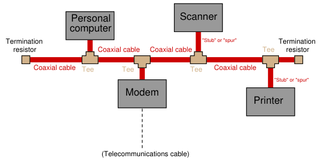
This cabling arrangement suffered several problems. First, it was inconvenient to run through an office building, since each DTE device needed to be coupled rather closely to the main “trunk.” Short cable segments (called stubs, spurs, or drops) joining the main trunk line to each DTE device could not be too long, or else they would could cause multiple signal reflections to occur in the main line. Secondly, the signal strength decreased with each “tee” connector: every time the signal branched, it would lose power. Thirdly, the need for termination resistors at the far ends of the “ether” cable opened up the possibility that those terminators might fail, fall off, or be forgotten during installation or maintenance52.
52These very same problems may arise in FOUNDATION Fieldbus networks, for the exact same reason: the cabling is passive (for increased reliability). This makes FOUNDATION Fieldbus instrument systems challenging to properly install for most applications (except in really simple cases where the cable route is straightforward), which in my mind is its single greatest weakness at the time of this writing (2009). I strongly suspect Ethernet’s history will repeat itself in FOUNDATION Fieldbus at some later date: a system of reliable “hub” devices will be introduced so that these problems may be averted, and installations made much simpler.
As Ethernet evolved as a practical networking standard, one of the many improvements added to its design was the concept of a repeating hub. A “repeater” is an active device designed to rebroadcast a signal, usually to overcome inevitable power losses incurred as that signal propagates along a cable. Repeaters are common in the telecommunications industry, where telephone, television, and computer signals must travel hundreds or thousands of miles between points of transmission and reception. A “repeating hub” is a repeater with multiple ports for many cables to plug into, where any signal entering on any cable is repeated to all ports on the device. Thus, a repeating hub (or simply “hub”) allows multiple Ethernet devices to interconnect with no degradation in signal quality:
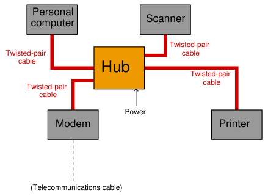
Not only do hubs improve system performance by boosting signals’ voltage levels, but they also eliminate the need for termination resistors in the network. With a hub-based system, each and every cable terminates at either a DTE or DCE device, which is (now) designed with the proper termination resistance built-in to their internal transceiver circuitry. This means each and every Ethernet cable is automatically terminated with the proper impedance simply by plugging it in to the Ethernet port of any device. “Stub” or “spur” cables with their length restrictions are also a thing of the past, since no cable ever splits or branches in a hub-based network system. Hubs are considered “layer 1” devices, because they operate purely on the physical layer of Ethernet: all they do is receive Ethernet signals and re-broadcast those signals in boosted form to all other devices plugged into the hub. As a piece of interconnecting hardware, a hub is considered a DCE (Data Communications Equipment), as opposed to the end-of-cable devices such as computers and printers which are DTEs (Data Terminal Equipment).
Repeating hubs may be connected together to form larger networks53:
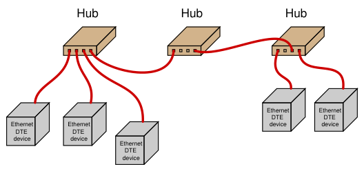
Since hubs are merely “layer 1” devices, mindlessly boosting and re-broadcasting signals received to their ports, their presence does not mitigate collisions between transmitting devices. As far as collisions between those devices is concerned, they might as well be directly connected together on a single piece of coaxial cable. One way to express this concept is to say that all portions of the network are part of the same collision domain. In other words, any devices on this network are able to collide with each other, because all transmissions are sensed by all the devices. This is analogous to a small room with several people in it: the room is small enough that everyone can hear everyone else talking, which means only one person in that room is able to speak at a time.
53There are practical limits as to how many hubs may be “daisy-chained” together in this manner, just as there are practical limits to how long a twisted-pair cable may be (up to 100 meters). If too many hubs are cascaded, the inevitable time delays caused by the process of repeating those electrical impulses will cause problems in the network. Also, I have neglected to specify the use of crossover cables to connect hubs to other hubs – this is a topic to be covered later in this book!
Along with hubs came another form of Ethernet cable and connector: unshielded, twisted pair (UTP) wiring and RJ-45 “flat” connectors. These cables use multiple twisted pairs of wires instead of the coaxial cable specified in Metcalfe’s original Ethernet. The purpose of using twisted-wire pairs is to reduce magnetic signal coupling (for more information, refer to section 8.3.6 beginning on page 625).
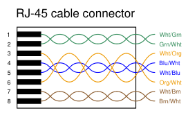
For 10 Mbps Ethernet over UTP cable (called 10BASE-T) and for 100 Mbps Ethernet (called 100BASE-TX), only two54 out of four available wire pairs are used:
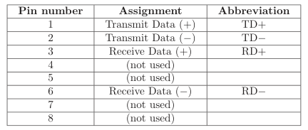
It should be noted that 1000 Mbps (“Gigabit”) Ethernet over twisted-wire pairs does in fact use all four pairs in an eight-wire cable, a departure from traditional UTP Ethernet cable wiring:
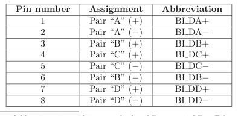
54With only half the available wire pairs used in a standard 10 Mbps or 100 Mbps Ethernet cable, this opens the possibility of routing two Ethernet channels over a single four-pair UTP cable and RJ-45 connector. Although this is non-standard wiring, it may be a useful way to “squeeze” more use out of existing cables in certain applications. In fact, “splitter” devices are sold to allow two RJ-45-tipped cables to be plugged into a single RJ-45 socket such that one four-pair cable will then support two Ethernet pathways.
Along with UTP cables and RJ-45 connectors came a significant alteration to the basic electrical scheme of Ethernet. Metcalfe’s original design used a simple coaxial cable as the “ether” connecting devices together. Such cables had only two conductors, meaning each device needed to transmit and receive data over the same two conductors. With UTP cable’s four pairs of conductors, transmission and reception of signals occurs over different wire pairs55. This means connections made between Ethernet devices must employ a “swap” between TD and RD wire pairs in order for communication to take place, so that the “receiver” circuitry of one device connects to the “transmitter” circuitry of the other, and vice-versa. This is precisely the same characteristic inherent to EIA/TIA-232 and four-wire EIA/TIA-485 networks, where separate wire pairs are dedicated to “transmit” and “receive” functions. In a typical Ethernet system, the interconnecting hubs perform this transmit/receive swap. Hubs are considered DCE devices, while computers and other end-of-the-line devices are considered DTE devices. This means the pin assignments of DTE and DCE devices must be different in order to ensure the transmit/receive pin swap necessary for straight-through cables to work. This also means if someone ever wishes to directly connect two Ethernet DTE devices together without the benefit of a hub in between, a special crossover cable must be used for the connection, identical in function to the null modem cable used to connect two EIA/TIA-232 DTE devices together:
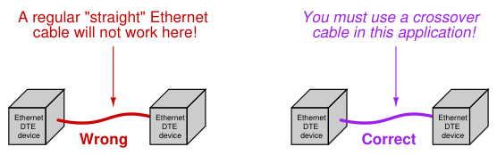
55This means modern Ethernet is capable of full-duplex communication between two devices, whereas the original coaxial-based Ethernet was only capable of half-duplex communication.
Furthermore, the same problem exists when multiple hubs are connected to form larger networks. Since each hub is a DCE device, a straight-through cable connecting two hubs together will pass transmitted signals from one hub directly to the “transmit” pins of the other hub, not the “receive” pins as it needs to. Consequently, a “crossover” cable should be used to connect two Ethernet hubs together in order to avoid this problem:
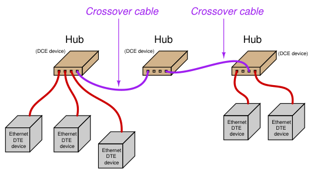
Some early Ethernet hubs provided a different solution to the “crossover” problem, and that was a crossover switch built into the hub, allowing a person to manually switch the transmit and receive wire pairs with the push of a button. In this next photograph of a four-port Ethernet hub, you can see the “Normal/Uplink” pushbutton on the right-hand side of the front panel, controlling the furthest-right port of the hub. This switch is supposed to be placed in the “Normal” position if the device plugged into that port is a DTE device, and placed in the “Uplink” position if the device is a DCE device (e.g. another hub):
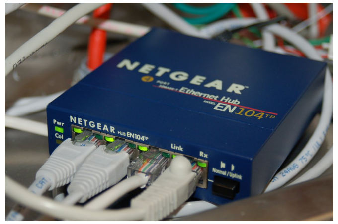
Note the LED indicator lights by each port on the hub. One LED indicates whether or not the cable is active (when a powered Ethernet DTE device is plugged into that port of the hub), while the other LED indicates traffic on the cable (by blinking). These LEDs are very helpful for identifying a crossover problem. This hub even has an LED indicating the occurrence of collisions (the “Col” LED just below the main power LED), giving simple visual indication of collision frequency. Newer Ethernet DTE and DCE devices use auto-sensing technology to perform any necessary transmit/receive pin swaps, rendering crossover cables and crossover pushbuttons unnecessary for either DTE-to-DTE or hub-to-hub connections. Auto-sensing is a standard feature of 1000BASE-T (“Gigabit” Ethernet).
The next evolutionary step in Ethernet network connections is the introduction of a switching hub, or simply switch. A “switch” looks exactly like a repeating hub, but it contains intelligence to route transmitted signals only to specific ports, rather than broadcasting every received data frame to all ports. What enables this to happen is the information contained in each Ethernet frame transmitted by DTE devices:
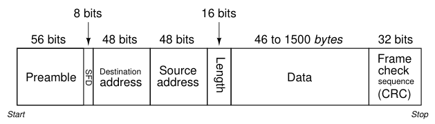
Note that part of the frame includes both a source address and a destination address. These refer to the 48-bit “MAC” addresses uniquely identifying each and every Ethernet device. A switching hub “learns” the identities of all devices plugged into each of its ports by remembering the “source” addresses received through those ports. When a switch receives an Ethernet frame with a destination address it recognizes as residing on one of its ports, it only repeats that frame to that specific port, and not to the other ports. In other words, an Ethernet switch does not mindlessly broadcast all messages to all of its ports the way an Ethernet hub does. The switch’s targeted direction of messages reduces the amount of “traffic” seen at the other ports, and also avoids unnecessary collisions because messages only get sent to their intended destinations. If a switch receives a data frame with an unrecognized destination address, it defaults to basic “hub” behavior by broadcasting that frame to all ports. If a device plugged into one of that switch’s ports replies to that data frame, the MAC address of that device is noted for future traffic direction to that port.
The presence of a switching hub in a larger network has the effect of dividing that network into separate collision domains, so that a collision occurring in one domain does not “spill over” into another domain where it would delay communication between those devices:
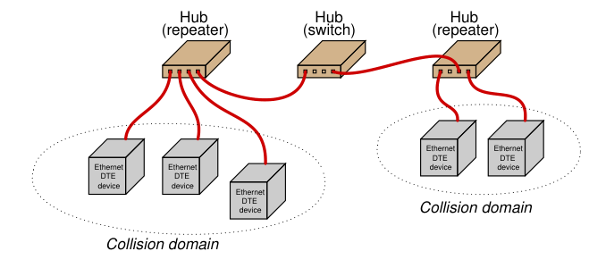
Of course, collisions between these two domains may still occur, for instance if a device in the first domain tries to transmit to a device in the second domain at the exact same time that a device in the second domain attempts to transmit to a device in the first. With this added intelligence, switching hubs are considered “layer 2” devices, since they operate not just at the physical layer of electrical impulses, but also at the next layer of device addressing. Since switching hubs add benefit beyond repeating hubs without any drawbacks56, most people elect to use switches whenever possible.
56Even the cost difference is negligible. It should be noted, though, that switches may exhibit unintended behavior if a cable is unplugged from one of the ports and re-plugged into a different port. Since switches internally map ports to device addresses, swapping a device from one port to another will “confuse” the switch until it re-initializes the port identities. Re-initialization may be forced by cycling power to the switch, if the switch does not do so on its own.